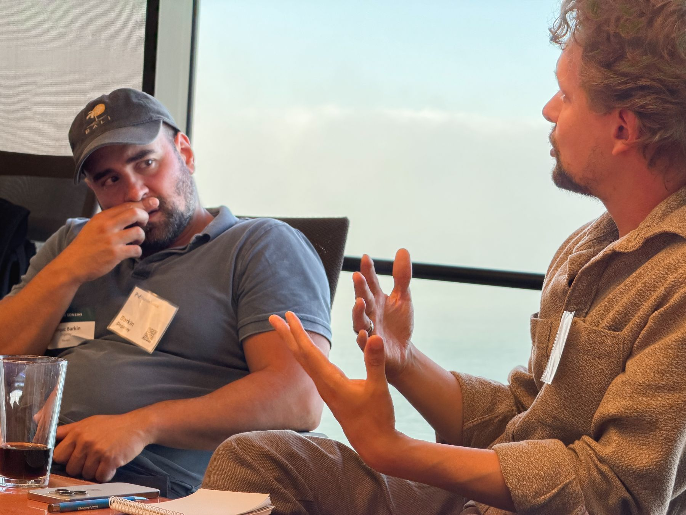
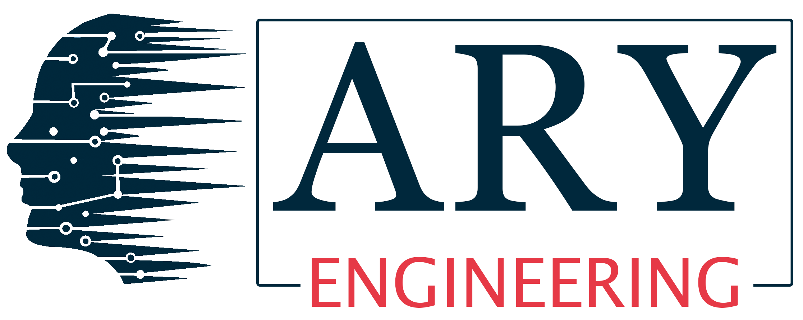

$0–2M
Annual revenue
Pre-seed & Seed
Find what customers value. Make the early hires.
For leadership teams of venture-backed companies
VEN is a peer membership for leadership teams of venture-backed companies. Each month, your dedicated VEN Partner starts with your top two challenges, then connects you with relevant peers and experts to test your thinking and decide what to do next.
Every new eligible leader gets their own trial, including your next colleague to join.

Membership, in practice
Capital comes with milestones. Your team has choices to make before the next board meeting. Your Partner helps you reach people who understand the pressure and have experience you can put to use.
Your role, company stage and priorities set the starting point.
A relevant peer, operator, expert or session can help you see another angle.
Test your thinking, compare options and decide what to try. You own the decisions and execution.


Someone at a similar stage gets the constraints. Someone with different experience may see an option you haven’t considered. You have useful experience to share, too.

What are your top two challenges? These might sound familiar.
Draw on leaders who have worked through acquisition, sales handoffs or retention.
Learn how others clarified responsibilities before deciding to hire.
Learn how others tested a new direction while protecting their core business.
Illustrative questions, not member results or promised introductions. Your challenges may be different.
See examples in practice
From the FounderNexus community
This was a fast track to relevant experience/advice in a room where you hold nothing back.
A member’s experience with FounderNexus, the community behind VEN. Individual experiences vary.
These annual revenue bands help start the conversation about relevant peers.
Annual revenue
Pre-seed & Seed
Find what customers value. Make the early hires.
Annual revenue
Series A
Build repeatable growth and the team to deliver it.
Annual revenue
Series B & C
Scale leadership, systems and growth without losing focus.
Annual revenue
Series D+
Navigate new markets and a more complex organization.
Annual revenue bands are a guide. Funding rounds and revenue do not always line up. We discuss your actual context when assessing fit.
Decisions that work together.
You can start on your own, or explore membership for colleagues across the leadership team. Each member’s support starts with their own work. The perspectives they bring back can help your team think through the plan together. Every new eligible colleague gets their own trial.
No. VEN is for leadership teams of venture-backed companies, including founders, CEOs and senior executives responsible for the growth plan. We discuss your role, stage and priorities to assess fit.
Your support starts with your own role and priorities. Every new eligible leader gets an individual trial, including colleagues who join after another team member.
Ask about participation, available formats, time-zone fit, pricing and trial terms. If colleagues may join too, discuss how their individual experiences would work.
No need to have it all figured out first. Tell us about your role and the two challenges you’re working through. We’ll explore whether VEN is a useful fit.